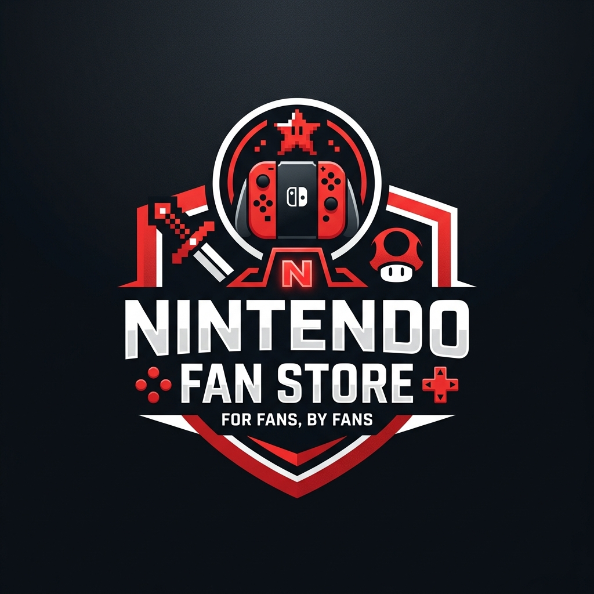

我們的故事
NINTENDO FAN STORE 成立於 2024 年，由一群對任天堂（Nintendo）充滿無比熱愛與執著的資深玩家所共同創立。我們深信，遊戲不僅僅是螢幕上的像素與聲光效果，更是一段段乘載了友情、勇氣與純真回憶的冒險旅程。
我們成立的初衷非常簡單：「讓遊戲中的驚喜與感動，在現實生活中延續。」
為此，我們與多方設計團隊合作，致力引進全球最精緻、最獨特且富有玩家情懷的設計商品。從穿搭服飾、軟萌玩偶，到隨身配件與精細雕刻公仔，我們用心把關每一件周邊的材質與工藝，確保它能不負玩家的期待，成為你桌上、床頭或身上最引以為傲的珍藏。
品牌承諾
我們堅持誠信經營，提供消費者最完善的售後保障。所有上架商品均經過精細的安全與品質檢測，並提供親切的中文客服諮詢與7天無條件鑑賞退換政策。不論你是熱愛瑪利歐賽車的極速快感、薩爾達傳說的解謎探索，還是寶可夢的收集養成，這裡都有屬於你的珍貴寶物。
